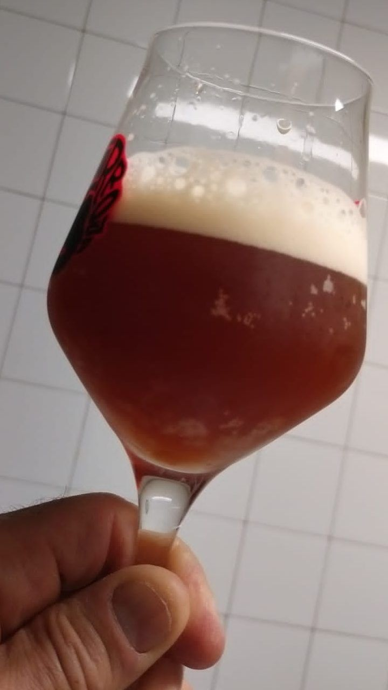
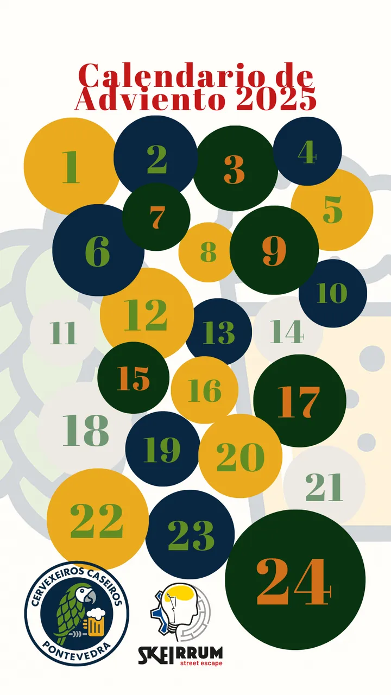
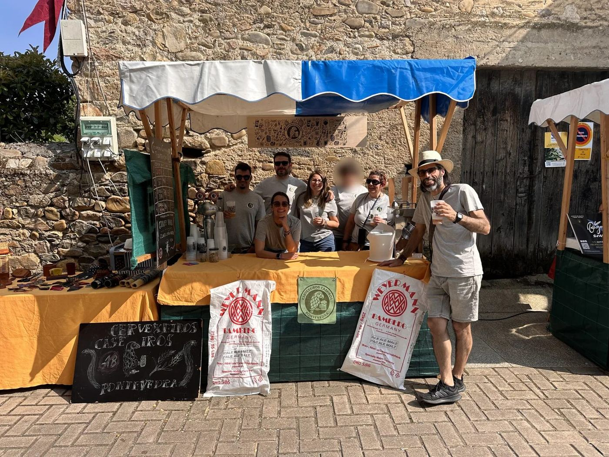

Asociación de cervexeiros caseiros · Pontevedra
Facemos cervexa na casa. E compartímola.
Un colectivo aberto, creativo e autoxestionado para aprender, elaborar, catar e rir arredor da cervexa feita na casa.
Benvid@s!
Máis de birra entre colegas que de protocolo de cata
Somos un grupo de persoas apaixonadas pola cultura da cervexa e dos fermentados en xeral. Encántanos elaborar na casa, experimentar con receitas e técnicas, compartir coñecemento… e, por suposto, gozar do resultado cun bo grolo en boa compañía.
Non fai falla saber: dende curiosos que nunca fixeron unha birra ata homebrewers con anos de lúpulo ás costas, aquí aprendemos xuntos.
Coñécenos mellor →
Que facemos
Fermentar, fermentarei…
Obradoiros
Cursos de elaboración de cervexa e doutros fermentados: pan, kombucha, salsas… para todos os niveis.
Catas
Probamos as creacións dos socios e cervexas de fóra, e damos feedback construtivo (e sincero).
Elaboracións e compras conxuntas
Xuntamos forzas para elaborar en grupo e mercar ingredientes, equipos e cervexas mellor e máis barato.
Feiras e eventos
Levamos o noso posto a feiras e saímos de excursión cervexeira, aquí e alén.
Novidade · Nadal 2026
Volve o calendario de Advento cervexeiro
24 portiñas, 24 birras e unha ficha de cata para cada día. Encárgao xa e conta os días ata o Nadal como é debido.

Blog
Que andamos a facer

Feira de Petín 2025
A nosa primeira feira: Petín, o comezo do camiño. Montamos o noso primeiro posto e saímos ao encontro da xente.

Obradoiros de cervexa e outros fermentados: aprende creando
Gústache aprender facendo? Talleres de cervexa, pan, kombucha e salsas fermentadas para todos os niveis.
Únete á familia cervexeira
Por 20 € ao ano tes obradoiros, catas, elaboracións e compras conxuntas, descontos… e unha chea de colegas con quen compartir birras.